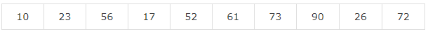

Pandas 数据结构
Pandas处理以下三个数据结构
- 系列(
Series) - 数据帧(
DataFrame)
这些数据结构构建在Numpy数组之上，这意味着它们很快。
维数和描述
考虑这些数据结构的最好方法是，较高维数据结构是其较低维数据结构的容器。 例如，DataFrame是Series的容器，Panel是DataFrame的容器。
| 数据结构 | 维数 | 描述 |
|---|---|---|
| 序列 | 1 | 1D标记均匀数组，大小不变。 |
| 数据帧 | 2 | 一般2D标记，大小可变的表结构与潜在的异质类型的列。 |
构建和处理两个或更多个维数组是一项繁琐的任务，用户在编写函数时要考虑数据集的方向。 但是使用Pandas数据结构，减少了用户的思考。
例如，使用表格数据(DataFrame)，在语义上更有用于考虑索引(行)和列，而不是轴0和轴1。
可变性
所有Pandas数据结构是值可变的(可以更改)，除了系列都是大小可变的。系列是大小不变的。
注 -
DataFrame被广泛使用，是最重要的数据结构之一。面板使用少得多。
系列
系列是具有均匀数据的一维数组结构。例如，以下系列是整数：10,23,56，...的集合。

关键点
- 均匀数据
- 尺寸大小不变
- 数据的值可变
数据帧
数据帧(DataFrame)是一个具有异构数据的二维数组。 例如，
| 姓名 | 年龄 | 性别 | 等级 |
|---|---|---|---|
| Maxsu | 25 | 男 | 4.45 |
| Katie | 34 | 女 | 2.78 |
| Vina | 46 | 女 | 3.9 |
| Lia | 女 | x女 | 4.6 |
上表表示具有整体绩效评级组织的销售团队的数据。数据以行和列表示。每列表示一个属性，每行代表一个人。
列的数据类型
上面数据帧中四列的数据类型如下：
| 列 | 类型 |
|---|---|
| 姓名 | 字符串 |
| 年龄 | 整数 |
| 性别 | 字符串 |
| 等级 | 浮点型 |
关键点
- 异构数据
- 大小可变
- 数据可变
面板
面板是具有异构数据的三维数据结构。在图形表示中很难表示面板。但是一个面板可以说明为DataFrame的容器。
关键点
- 异构数据
- 大小可变
- 数据可变